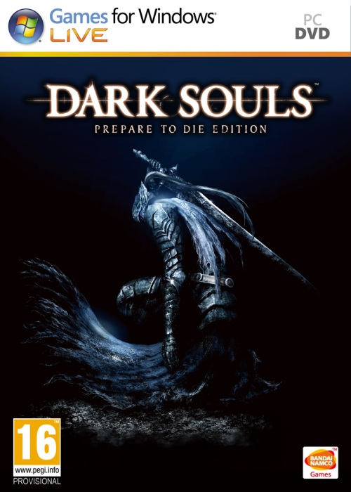

Dark Souls I 4.27 GB
Género: Souls
El juegos tiene lugar en un entorno de fantasía medieval oscura, donde el
personaje del jugador lucha contra caballeros, dragones, fantasmas, demonios
y otras entidades monstruosas o sobrenaturales. La acumulación, pérdida y
recuperación de almas son elementos centrales de la narrativa y la jugabilidad
de los juegos de Dark Souls.